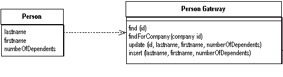
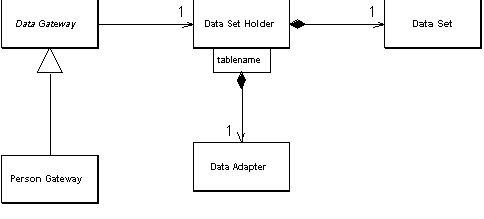

| Home | Articles | Talks | Links | Contact Me | ISA | ThoughtWorks |
An object that acts as a Gateway to a database table

It's good to keep database access code separated from the rest of an application. A simple Table Data Gateway holds all the SQL for accessing a single table: selects, inserts, updates and deletes. Other routine call its manipulation routines to for all changes in the database and issue queries through it's find routines, each of which passes back a suitable data structure.
A Table Data Gateway has a simple interface, usually consisting of several find methods to get data from the database, together with update, insert, and delete methods. Each method maps the input parameters into a SQL and executes the SQL against a database connection.The Table Data Gateway is usually stateless, as its role is to push data back and forth.
The trickiest thing about a Table Data Gateway is how it returns information from a query. Even a simple find-by-id query will return multiple data items. In environments where you can return multiple items you can use that for a single row. However many languages only give you a single return value, and many queries will return multiple rows.
On alternative is to return some simple data structure, such as a map. A map works, but it forces data to be copied out of the record set that comes from the database into the map. I find that using maps to pass around data is bad form, it defeats compile time checking and is not a very explicit interface - leading to bugs as people misspell what's in the map. A better alternative is to use a Data Transfer Object, another object to create - but one that may well be used elsewhere.
To save all this you can return the Record Set that comes from the SQL query. This is conceptually messy, as ideally we would like the in-memory object to not have to know anything about the SQL interface. It may also make it difficult to substitute the database for a file if you cannot easily create record sets in your own code. However in many environments, such as .NET, that use Record Set widely it's a very effective approach. A table based Table Data Gateway thus goes very well with Table Module. If all of your updates are done through the Table Data Gateway the returned data can be based on views rather than the actual tables, which reduces the coupling between your code and the database.
If you're using a Domain Model you can have the Table Data Gateway return the appropriate domain object. The problem with this is that you then have bidirectional dependencies between the gateway and the domain objects. Since the two are closely connected that isn't necessarily a terrible thing, but it's always something I'm reluctant to do.
Most of the time you use Table Data Gateway you'll have one Table Data Gateway for each table in the database. For very simple cases, however, you can have a single Table Data Gateway that handles all the methods for all the tables.
As with Row Data Gateway the decision to use Table Data Gateway is first whether to use a Gateway approach, and then which one to use.
I find Table Data Gateway is probably the simplest database interface pattern to use, as it maps so nicely onto a database table or record type. It also makes a natural point to encapsulate the precise access logic of the data source. I use it least with Domain Model, because I find that Data Mapper gives a better isolation between the Domain Model and the database, and isn't that much more complex to use.
Table Data Gateway works particularly well with Table Module where the Table Data Gateway produces a record set data structure for the Table Module to work on. Indeed I can't really imagine any other database mapping approach for Table Module.
Just like Row Data Gateway, Table Data Gateway is very suitable for Transaction Scripts. The choice between the two really boils down on how to deal with multiple rows of data. Many people like using a Data Transfer Object, but that usually seems like more work than is worthwhile, unless the same Data Transfer Object is used elsewhere. I tend to prefer Table Data Gateway when the result set representation is convenient for the Transaction Script to work with.
Interestingly it often makes sense to use Table Data Gateway with Data Mapper - having the Data Mappers talk to the database via Table Data Gateways. Although this makes little sense when everything is hand coded, it can be very effective when if you want to use metadata for the Table Data Gateways but prefer hand code for the actual mapping to the domain objects.
One of the benefits of using a Table Data Gateway to encapsulate data base access is that the same interface can be used both for using SQL to manipulate the database, and for using stored procedures. Indeed stored procedures themselves are often organized as a Table Data Gateway, that way the actual table structure is encapsulated behind insert and update stored procedures. The find procedures in this case can return views, which all helps to hide the underlying table structure.
[Alur, Crupi, and Malks] contains the Data Access Object pattern which is a Table Data Gateway. In the discussion they show returning a collection of Data Transfer Objects on the query methods. It's not clear whether they see Data Access Object as always being table based, the intent and discussion seems to imply either Table Data Gateway or Row Data Gateway.
I've used a different name, partly because I see this pattern as a particular usage of the more general Gateway concept, and felt the pattern name should reflect that. The other reason is that the term Data Access Object and it's abbreviation DAO has it's own particular meaning within the Microsoft world.
Table Data Gateway is the usual form of database access in the windows world, so it makes sense to illustrate one with C#. In doing this, however, I have to stress that this classic form of Table Data Gateway isn't quite the way that fits in with the .NET environment since it doesn't take advantage of the ADO.NET data set, instead it uses the Data Reader which is a cursor like interface to database records. The data reader is the right choice to manipulating larger amounts of information where you don't want to bring everything into memory in one go.
For the example I'm using a person gateway class that connects to a person table in a database. The person gateway contains the finder code, returning ADO.NET's data reader to access the returned data.
class PersonGateway...
public IDataReader FindAll() {
String sql = "select * from person";
return new OleDbCommand(sql, DB.Connection).ExecuteReader();
}
public IDataReader FindWithLastName(String lastName) {
String sql = "SELECT * FROM person WHERE lastname = ?";
IDbCommand comm = new OleDbCommand(sql, DB.Connection);
comm.Parameters.Add(new OleDbParameter("lastname", lastName));
return comm.ExecuteReader();
}
public IDataReader FindWhere(String whereClause) {
String sql = String.Format("select * from person where {0}", whereClause);
return new OleDbCommand(sql, DB.Connection).ExecuteReader();
}
Almost always you'll want to pull back a bunch of rows with a reader. On a rare occasion you might want to get hold of an individual row of data with a method along these lines.
class PersonGateway...
public Object[] FindRow (long key) {
String sql = "SELECT * FROM person WHERE id = ?";
IDbCommand comm = new OleDbCommand(sql, DB.Connection);
comm.Parameters.Add(new OleDbParameter("key",key));
IDataReader reader = comm.ExecuteReader();
reader.Read();
Object [] result = new Object[reader.FieldCount];
reader.GetValues(result);
reader.Close();
return result;
}
The update and insert methods receive the necessary data in arguments and invokes the appropriate SQL routines.
class PersonGateway...
public void Update (long key, String lastname, String firstname, long numberOfDependents){
String sql = "UPDATE person SET lastname = ?, firstname = ?, numberOfDependents = ? WHERE id = ?";
IDbCommand comm = new OleDbCommand(sql, DB.Connection);
comm.Parameters.Add(new OleDbParameter ("last", lastname));
comm.Parameters.Add(new OleDbParameter ("first", firstname));
comm.Parameters.Add(new OleDbParameter ("numDep", numberOfDependents));
comm.Parameters.Add(new OleDbParameter ("key", key));
comm.ExecuteNonQuery();
}
class PersonGateway...
public long Insert(String lastName, String firstName, long numberOfDependents) {
String sql = "INSERT INTO person VALUES (?,?,?,?)";
long key = GetNextID();
IDbCommand comm = new OleDbCommand(sql, DB.Connection);
comm.Parameters.Add(new OleDbParameter ("key", key));
comm.Parameters.Add(new OleDbParameter ("last", lastName));
comm.Parameters.Add(new OleDbParameter ("first", firstName));
comm.Parameters.Add(new OleDbParameter ("numDep", numberOfDependents));
comm.ExecuteNonQuery();
return key;
}
The deletion method just needs a key
class PersonGateway...
public void Delete (long key) {
String sql = "DELETE FROM person WHERE id = ?";
IDbCommand comm = new OleDbCommand(sql, DB.Connection);
comm.Parameters.Add(new OleDbParameter ("key", key));
comm.ExecuteNonQuery();
}
The generic Table Data Gateway works with pretty much any kind of platform since it is nothing but a wrapper for SQL statements. When you use .NET you'll use data sets more often, but Table Data Gateway is still useful, although it comes in a different form.
A data set needs data adapters to load the data into the data set and do updates to the data. So I found it useful to define a holder for the data set and adapters that load and save the data. A gateway then uses the holder to store both the data sets and the adapters. Much of this behavior is generic, and can be done in a superclass.
Figure 1: Class diagram of data set oriented gateway and the supporting data holder
The holder stores a data set and a collection of adapters indexed by the name of the table.
class DataSetHolder... public DataSet Data = new DataSet(); private Hashtable DataAdapters = new Hashtable();
The gateway stores the holder and exposes the data set for its clients.
class DataGateway...
public DataSetHolder Holder;
public DataSet Data {
get {return Holder.Data;}
}
The gateway can act on an existing holder, or create a new one.
class DataGateway...
protected DataSetGateway() {
Holder = new DataSetHolder();
}
protected DataSetGateway(DataSetHolder holder) {
this.Holder = holder;
}
The find behavior can work a bit differently here. Since a data set is a container for table oriented data, and one data set can contain data from several tables. As a result it's better to load data into a data set.
class DataGateway...
public void LoadAll() {
String commandString = String.Format("select * from {0}", TableName);
Holder.FillData(commandString, TableName);
}
public void LoadWhere(String whereClause) {
String commandString =
String.Format("select * from {0} where {1}", TableName,whereClause);
Holder.FillData(commandString, TableName);
}
abstract public String TableName {get;}
class PersonGateway...
public override String TableName {
get {return "Person";}
}
class DataSetHolder...
public void FillData(String query, String tableName) {
if (DataAdapters.Contains(tableName)) throw new MutlipleLoadException();
OleDbDataAdapter da = new OleDbDataAdapter(query, DB.Connection);
OleDbCommandBuilder builder = new OleDbCommandBuilder(da);
da.Fill(Data, tableName);
DataAdapters.Add(tableName, da);
}
To update data you manipulate the data set directly in some client code.
person.LoadAll(); person[key]["lastname"] = "Odell"; person.Holder.Update();
The gateway can have an indexer to get make it easier to get to specific rows.
class DataGateway...
public DataRow this[long key] {
get {
String filter = String.Format("id = {0}", key);
return Table.Select(filter)[0];
}
}
public override DataTable Table {
get { return Data.Tables[TableName];}
}
The update triggers update behavior on the holder.
class DataSetHolder...
public void Update() {
foreach (String table in DataAdapters.Keys)
((OleDbDataAdapter)DataAdapters[table]).Update(Data, table);
}
public DataTable this[String tableName] {
get {return Data.Tables[tableName];}
}
Insertion can be done much the same way: get a data set, insert a new row to the data table, and fill in each column. However it can be useful to use an update method to do the insertion in one call.
class DataGateway...
public long Insert(String lastName, String firstname, int numberOfDependents) {
long key = new PersonGatewayDS().GetNextID();
DataRow newRow = Table.NewRow();
newRow["id"] = key;
newRow["lastName"] = lastName;
newRow["firstName"] = firstname;
newRow["numberOfDependents"] = numberOfDependents;
Table.Rows.Add(newRow);
return key;
}
 |  |